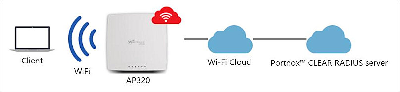
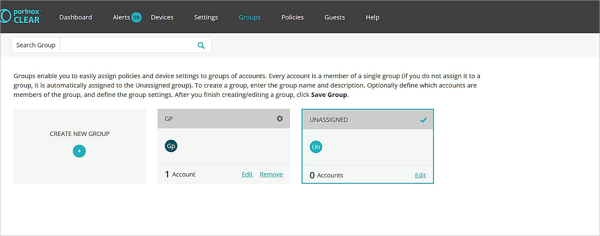
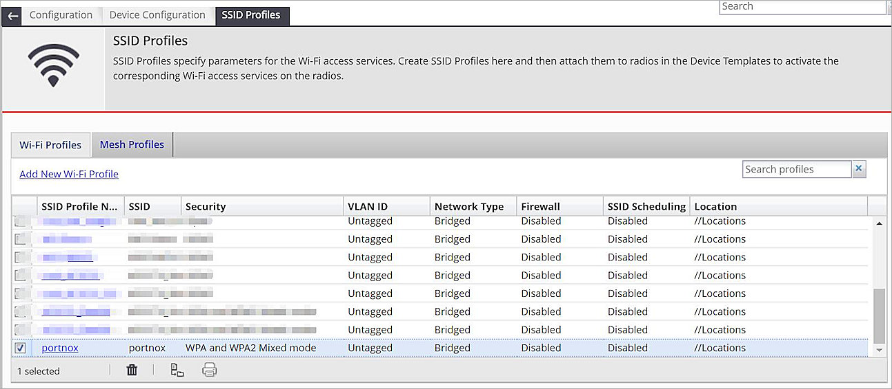

Deployment Overview
This guide demonstrates how to integrate WatchGuard Wi-Fi Cloud with Portnox™ CLEAR to ensure secure and trusted user access with RADIUS.
Platform and Software
The hardware and software used to complete the steps in this document include:
- Portnox™ CLEAR:
- Portnox™ CLEAR Account
- WatchGuard:
- WatchGuard AP320 version 8.8.0-101
- WatchGuard Wi-Fi Cloud Account
Test Topology

Portnox™ CLEAR Configuration
- Log in to the Portnox™ CLEAR Management Portal.
- Select Devices > Accounts.
- Click
 to create a new Portnox™ CLEAR account.
to create a new Portnox™ CLEAR account. - In the Email text box, type an email address that is associated with your organization.
- In the Description text box, type an optional description for the account.
- Keep all other settings as the default value.

- Click Save account.
- The email address you specify will receive a notification with a password that you can use with RADIUS authentication.

- Select Settings > +CLEAR RADIUS Service > Create new CLEAR RADIUS instance to create a RADIUS server.

- Select Groups > Create New Group > GROUP MEMBERS to add the account you created to the group.

- Click + GROUP SETTINGS > DEVICE WI-FI SETTINGS > Add Wi-Fi network.
- In the SSID text box, type the SSID to use with the Portnox CLEAR RADIUS server.
- From the Authentication type drop-down list, select 802.1x with Passwords.
- From the Authentication encryption type drop-down list, select AES.

- Click Add.
- Click Save Group.

WatchGuard Wi-Fi Cloud Basic Configuration
For detailed information on WatchGuard Wi-Fi Cloud AP deployment, see the Getting Started Guide.
These instructions use Manage for the Wi-Fi Cloud configuration. You can now also perform these configuration steps with the Discover application. For more information, see About Discover.
Configure WatchGuard Wi-Fi Cloud to Integrate with Portnox™ CLEAR
The information required in these steps is detailed in the manual that you downloaded from Portnox™ CLEAR in a previous step. For more information, see Portnox™ CLEAR Configuration.
- Log in to WatchGuard Wi-Fi Cloud.
- Open Manage.
- Select Configuration > Device Configuration > RADIUS Profiles.
- On the RADIUS Profiles tab, click Add RADIUS Profile.

- In the Profile Name text box, type a descriptive name for the profile.
- In the IP Address text box, type the IP address of the RADIUS server from Portnox™ CLEAR.
- In the Authentication Port text box, type the port number listed for the RADIUS server from Portnox™ CLEAR.
- In the Accounting Port text box, type the port number listed for the RADIUS server from Portnox™ CLEAR.
- In the Shared secret text box, type the shared secret from the Portnox™ CLEAR RADIUS server.
- Click Save.
- From Manage, select Configuration > Device Configuration > SSID Profiles.
- Click Add New Wi-Fi Profile.

- In the Profile Name text box, type a descriptive name for the profile.
- In the SSID text box, type an SSID name. This name must be the same as the SSID name configured in the Portnox™ CLEAR Configuration.
- From Security Mode drop-down list, select WAP and WAP2 Mixed mode.
- Enable 802.1X.
- From the Primary Authentication Server drop-down list in the RADIUS Authentication section, select the RADIUS server profile you configured for Portnox™ CLEAR.
- From the Primary Accounting Server drop-down list under in the RADIUS Accounting Server Details section, select the RADIUS server profile you configured for Portnox™ CLEAR.
- Update the RADIUS Retry Timeout parameter to 10 (seconds).
- Keep all other settings as the default value.
- Click Save to save the SSID Profile.

- From Manage, select Configuration > Device Configuration > Device Templates.
- Click Add Device Template.
- In the Template Name text box, type a descriptive name for the Device Template.
- Expand the Device Password section in the Devices Settings section.
- In the Password text box, type a password to use for this template. This password is for the AP and is not related to the Portnox™ CLEAR integration.

- Expand the Radio Settings section.
- In the Wi-Fi Profiles tab, click Add SSID Profile, then add the SSID Profile you created for the user.

- Click Save to save the Device Template.

- From Manage, select Monitoring > Managed Devices.
- For the AP that you want to configure, click the Device Template link (in this example, portnox) to apply the new Device Template to the AP.

Test Portnox™ CLEAR Integration
- Use a wireless client device to connect to Wi-Fi Cloud with the SSID portnox.
- Type your user name and password that you received in the Portnox™ CLEAR Configuration section.
You should see a 802.1X authentication success notification in the Portnox alerts page.